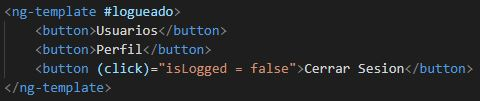
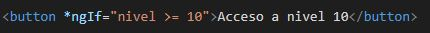

En este caso vemos la condicion *ngIf la cual nos dice que si la variable isLogged es false se mostrará el contenido del ng-container, de lo contrario nos redirige a un ng-template llamado logueado. Al hacer click en el button de iniciar sesion, la variable isLogged pasa a tener un valor true.
La variable isLogged se declara en el .ts de la siguiente forma: isLogged: boolean = false
Encierra un conjunto de elementos y se puede identificar con el simbolo "#"
Se puede usar un if en un boton, como para hacer que se muestre dependiendo de una variable utilizando *ngIfen este caso el boton se muestra cuando la variable nivel sea mayor o igual a 10. la variable nivel se declara en el .ts de la siguiente forma: nivel: number = 5
